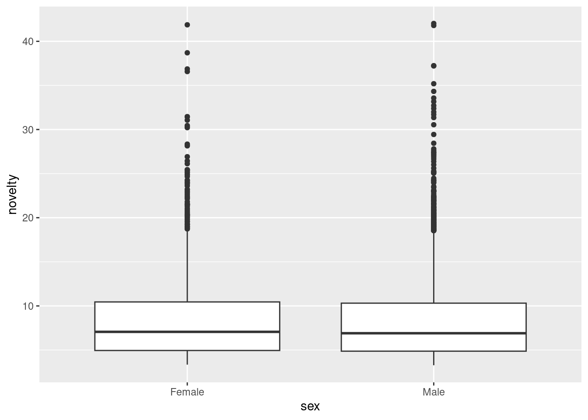
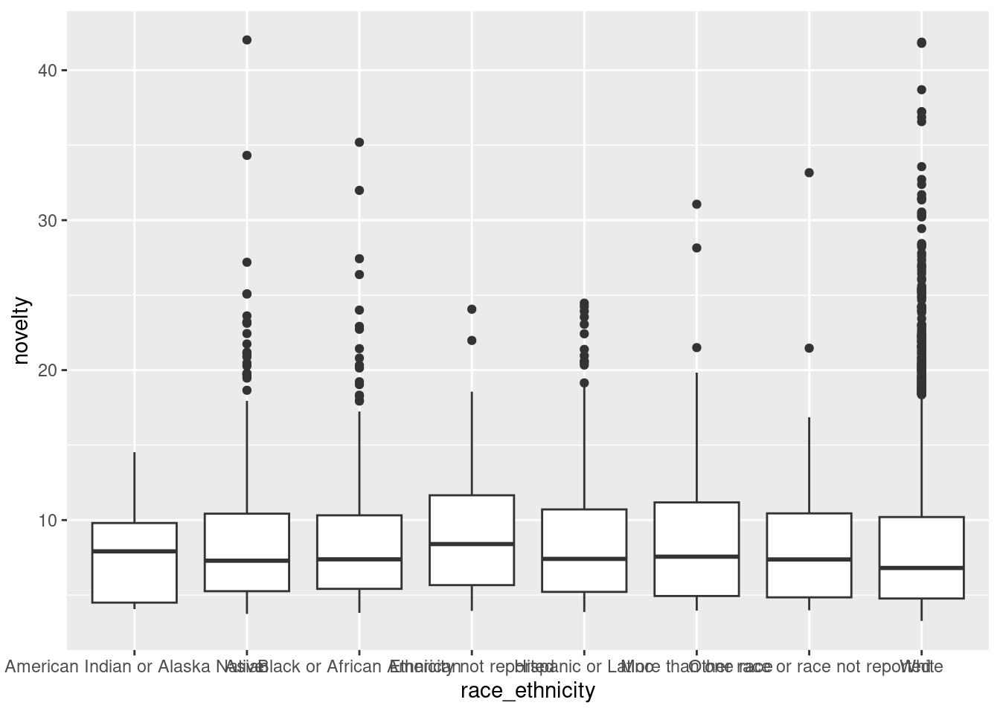
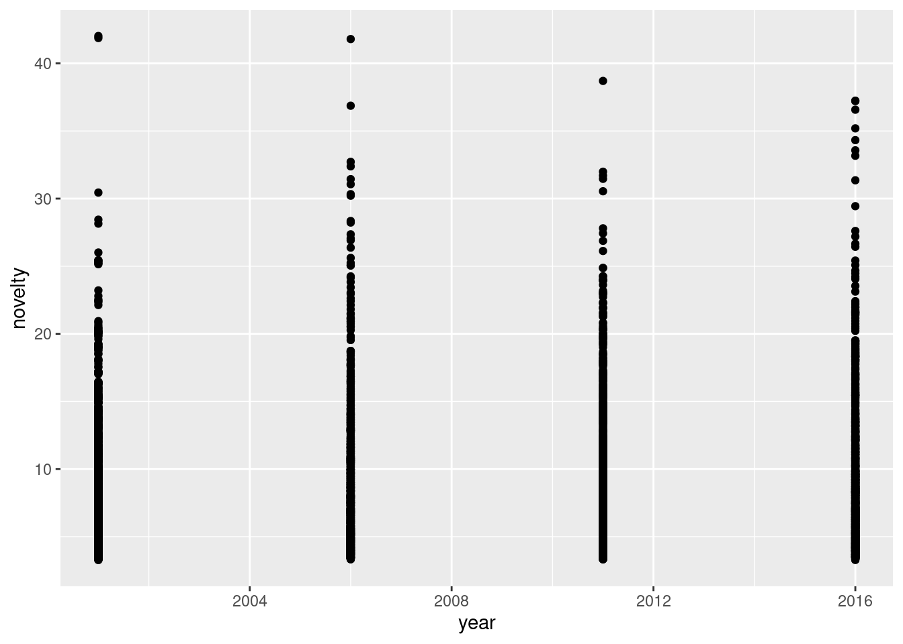
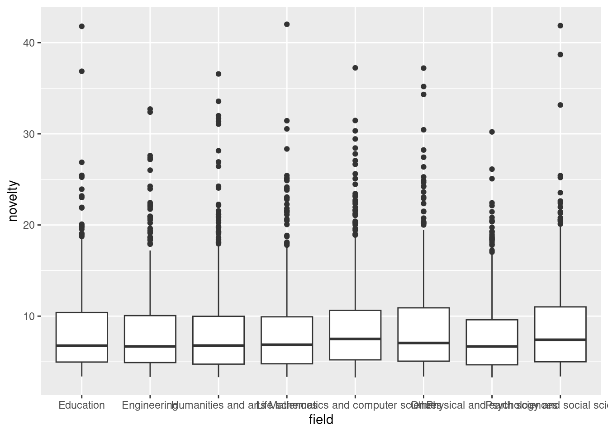
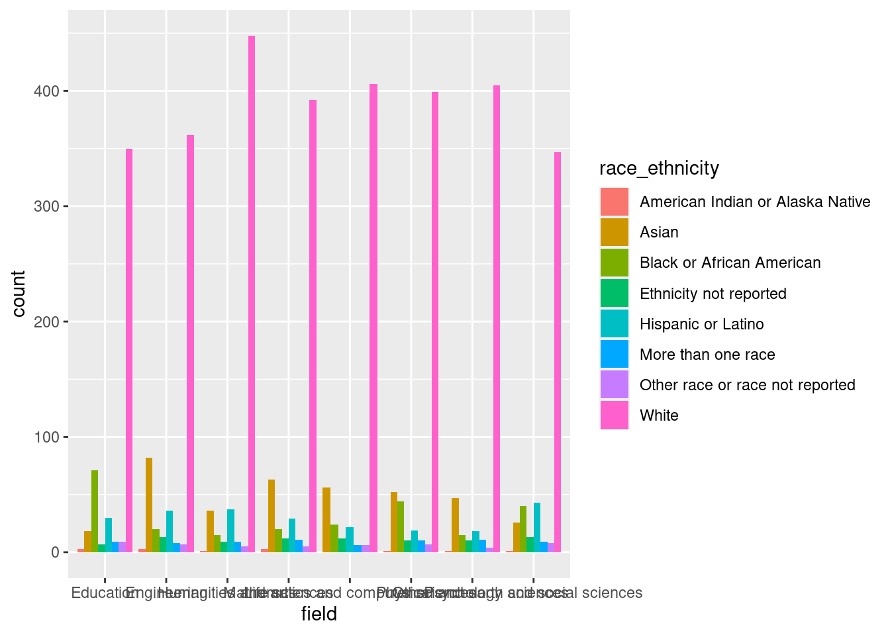
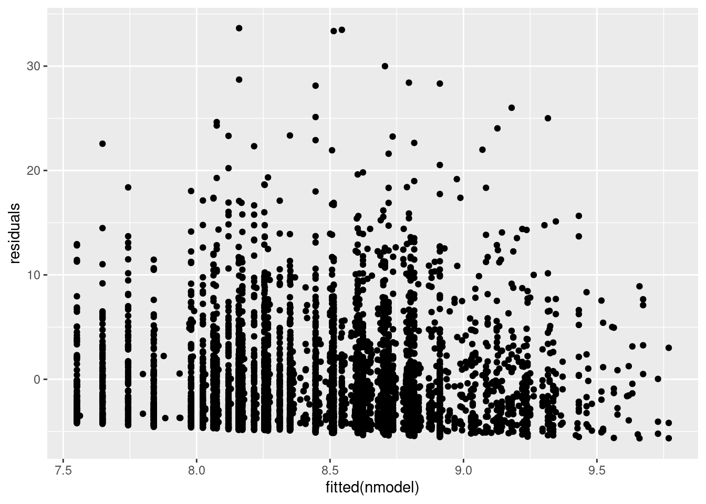
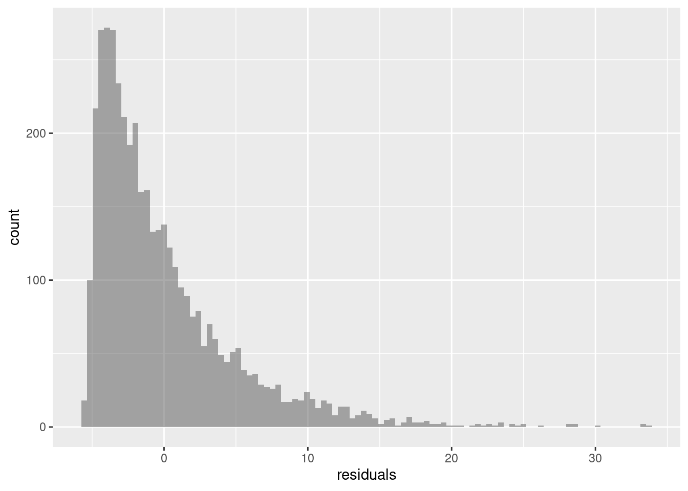
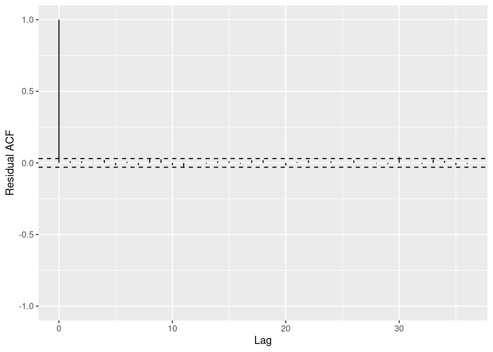
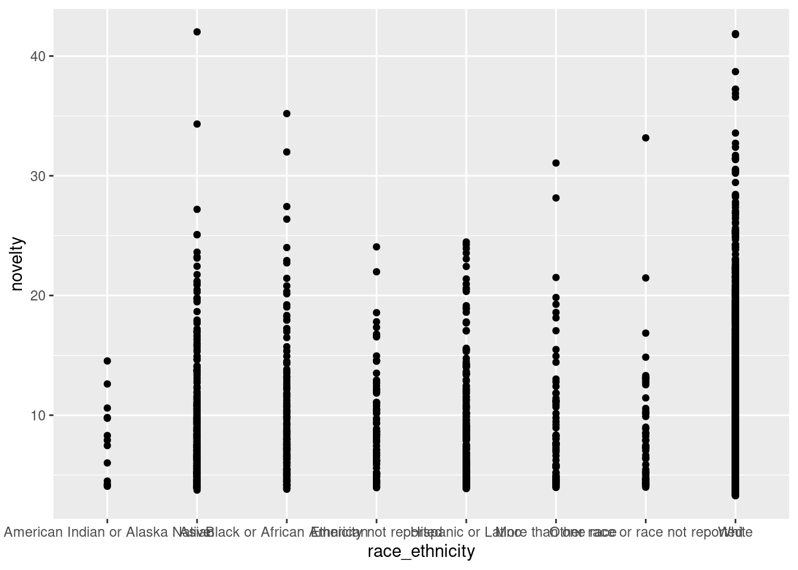

innovation <- read_csv('https://sldr.netlify.app/data/phd_innovation.csv', show_col_types = FALSE)
model <- lm(novelty ~ sex + race_ethnicity, data = innovation)
nrow(innovation)[1] 4195Planning a model: the response would be novelty, and predictors are sex and race ethnicity. I wanted to know if sex and race would have any correlation with innovation level.
innovation <- read_csv('https://sldr.netlify.app/data/phd_innovation.csv', show_col_types = FALSE)
model <- lm(novelty ~ sex + race_ethnicity, data = innovation)
nrow(innovation)[1] 4195gf_boxplot(novelty ~ sex, data = innovation)
gf_boxplot(novelty ~ race_ethnicity, data = innovation)
gf_point(novelty ~ year, data = innovation)
gf_boxplot(novelty ~ field, data = innovation)
gf_bar( ~ field,
fill = ~ race_ethnicity,
data = innovation,
position = 'dodge')
The graph between novelty and sex doesn’t show much since they have very similar median and IQR. The graph between novelty and race ethnicity shows a dominant lead for White followed by Asians and Black or African American. I can also see a small trend as the year goes on the novelty level tend to be down a little bit. There are some fields are leading the novelty level but I can’t really tell since the names are all overlapped.
summary(model)
Call:
lm(formula = novelty ~ sex + race_ethnicity, data = innovation)
Residuals:
Min 1Q Median 3Q Max
-5.313 -3.551 -1.491 1.870 33.519
Coefficients:
Estimate Std. Error t value
(Intercept) 8.03157 1.38423 5.802
sexMale -0.09716 0.15580 -0.624
race_ethnicityAsian 0.85802 1.40703 0.610
race_ethnicityBlack or African American 0.80241 1.41871 0.566
race_ethnicityEthnicity not reported 1.22550 1.48426 0.826
race_ethnicityHispanic or Latino 0.83296 1.42123 0.586
race_ethnicityMore than one race 1.16157 1.50115 0.774
race_ethnicityOther race or race not reported 0.72359 1.54965 0.467
race_ethnicityWhite 0.34103 1.38608 0.246
Pr(>|t|)
(Intercept) 7.03e-09 ***
sexMale 0.533
race_ethnicityAsian 0.542
race_ethnicityBlack or African American 0.572
race_ethnicityEthnicity not reported 0.409
race_ethnicityHispanic or Latino 0.558
race_ethnicityMore than one race 0.439
race_ethnicityOther race or race not reported 0.641
race_ethnicityWhite 0.806
---
Signif. codes: 0 '***' 0.001 '**' 0.01 '*' 0.05 '.' 0.1 ' ' 1
Residual standard error: 4.986 on 4186 degrees of freedom
Multiple R-squared: 0.002523, Adjusted R-squared: 0.0006166
F-statistic: 1.323 on 8 and 4186 DF, p-value: 0.2265Causal Diagram:
My main predictor is race ethnicity with my response variable novelty. I made sex as a moderator since it doesn’t affect novelty level directly. Both field and year showed a reasonable correlation with novelty. I would include race ethnicity, field, and year as my predictors to my new model.
nmodel <- lm(novelty ~ race_ethnicity + field + year, data = innovation)
summary(nmodel)
Call:
lm(formula = novelty ~ race_ethnicity + field + year, data = innovation)
Residuals:
Min 1Q Median 3Q Max
-5.656 -3.522 -1.545 1.876 33.635
Coefficients:
Estimate Std. Error t value
(Intercept) -30.53964 27.54555 -1.109
race_ethnicityAsian 0.70139 1.40565 0.499
race_ethnicityBlack or African American 0.56545 1.41834 0.399
race_ethnicityEthnicity not reported 1.03825 1.48281 0.700
race_ethnicityHispanic or Latino 0.61522 1.42053 0.433
race_ethnicityMore than one race 0.99800 1.50053 0.665
race_ethnicityOther race or race not reported 0.50596 1.54801 0.327
race_ethnicityWhite 0.18061 1.38506 0.130
fieldEngineering -0.08386 0.31417 -0.267
fieldHumanities and arts 0.09449 0.30943 0.305
fieldLife sciences -0.03971 0.31287 -0.127
fieldMathematics and computer sciences 0.56017 0.31306 1.789
fieldOther 0.44429 0.31044 1.431
fieldPhysical and earth sciences -0.51178 0.31651 -1.617
fieldPsychology and social sciences 0.45058 0.31835 1.415
year 0.01920 0.01371 1.400
Pr(>|t|)
(Intercept) 0.2676
race_ethnicityAsian 0.6178
race_ethnicityBlack or African American 0.6902
race_ethnicityEthnicity not reported 0.4838
race_ethnicityHispanic or Latino 0.6650
race_ethnicityMore than one race 0.5060
race_ethnicityOther race or race not reported 0.7438
race_ethnicityWhite 0.8963
fieldEngineering 0.7895
fieldHumanities and arts 0.7601
fieldLife sciences 0.8990
fieldMathematics and computer sciences 0.0736 .
fieldOther 0.1525
fieldPhysical and earth sciences 0.1060
fieldPsychology and social sciences 0.1570
year 0.1615
---
Signif. codes: 0 '***' 0.001 '**' 0.01 '*' 0.05 '.' 0.1 ' ' 1
Residual standard error: 4.978 on 4179 degrees of freedom
Multiple R-squared: 0.007298, Adjusted R-squared: 0.003735
F-statistic: 2.048 on 15 and 4179 DF, p-value: 0.009758\[y = -30.54 + 0.7\beta_{raceAsian} + 0.57\beta_{raceAfricanAmerican} + 1.04\beta_{raceNotReported} + 0.62\beta_{raceLatino} + 1\beta_{raceMorethanone} + 0.51\beta_{raceOther} + 0.18\beta_{raceWhite} - 0.08\beta_{fieldEngineering} + 0.09\beta_{fieldHumanityandArts} -0.04\beta_{fieldLifeScience} + 0.56\beta_{fieldMathandCS} + 0.44\beta_{fieldOther} - 0.51\beta_{fieldPhysicalandEarthScience} +0.45\beta_{fieldPhychologyandSocialScience} + 0.02\beta_{year} + \epsilon,\] \[\epsilon \sim N(0, 4.978)\]
innovation$residuals <- residuals(nmodel)
gf_point(residuals ~ fitted(nmodel), data = innovation)
gf_histogram(~residuals,data = innovation, bins=100)
s245::gf_acf(~nmodel) |> gf_lims(y = c(-1,1))
Residuals and fitted model: It doesn’t really show linearity from this graph, so I don’t think it meets the condition.
Histogram of residuals: This is not normally distributed. This is a right-skewed graph. It also don’t meet the condition.
ACF plot of residuals: There is only one significant spike, so I would say this meets the condition.
Since not all of them met the conditions, I cannot draw a valid conclusion from this model.
b2 <- innovation |>
select(field, race_ethnicity, year, novelty) |>
na.omit() |>
mutate(preds = predict(nmodel),
resids = resid(nmodel))gf_point(novelty ~ race_ethnicity,
data = b2) |>
gf_line(preds ~ race_ethnicity)
I don’t know why somehow the line doesn’t show.